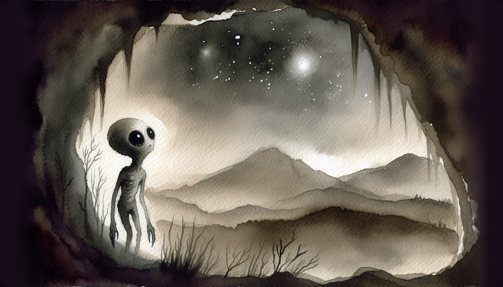

The Stars That Betray
The stars come out tonight, precious. They prick the black velvet of the sky like tiny silver daggers, cold and far and treacherous. We stands at the mouth of our cave and looks up at them, squinting our large pale eyes against their faint light. They watches us, yes they does. Always watching from their high places, never blinking, never sleeping. Cruel stars. Judging stars.
We remembers when we did not hate them so. When Sméagol was young and the world was new, we would lie on the soft grass by the Great River and count the stars as they appeared one by one. They seemed friendly then, like the eyes of kindly ancestors looking down with love. Deagol would point at them and name the shapes they made—constellations he called them, though we never learned the names. The stars were beautiful once. Before.
"Before what, my love? Before me?"
"Yes, precious. Before you came and changed everything. Before the golden circle claimed our heart."
"And do you regret it? Would you go back to that soft creature who gazed at stars with wonder instead of hate?"
"We... we does not know, precious. We does not know anything anymore. The stars mock us now. They sees what we has become."
The cave has been our home for longer than men have walked the earth, or so it feels. The Misty Mountains swallowed us whole all those centuries ago, and we learned to love the dark because the dark did not judge. The dark accepted us—pale, twisted, hungry thing that we had become. But when we crawls to the cave mouth sometimes, when the hunger for light becomes too great to ignore, the stars are always there. Waiting. Witnessing.
They saw what we did by the river, precious. They saw the struggle in the reeds, the flash of golden scales in the water, the way our hands closed around Deagol's throat and would not let go. The stars watched it all with their cold silver eyes, and they remember. They will always remember. Even now, six hundred years later, we feels them pressing down on us with the weight of that memory.
And they saw the other thing too. The greater sin. They saw the Bagginses creeping through our tunnels, saw the little thief with his fat hairy feet and his greedy fingers closing around our Precious. They saw us wake to the empty rock shelf where it had rested, felt our scream tear through the mountain like a wounded beast. The stars witnessed our loss. They knows what was taken from us. Yet they did nothing. They never do anything. Just watch.
"Why do they watch us so, precious? Why do they not look away?"
"Because you are interesting, my sweet. Because creatures like us—broken things that persist—we are rare and terrible. The stars collect our story like men collect shiny stones."
"We does not want to be collected. We wants to be left alone in the dark."
"Then turn away. Crawl back inside. But you never do, do you? You always come back to look at them. To hate them. To need them."
The Master keeps books in his study—great heavy tomes with soft leather covers that smell of long ago. Sometimes we looks at the pictures inside when he is away. Pictures of the heavens, of the stars arranged in their patterns, of ancient men who studied their movements and wrote down what they learned. Astronomy, one book called it. The science of star-watching. We hisses at the word. Science. As if the stars could be understood, tamed, made small enough to fit on parchment.
But even as we hates them, we cannot stop looking up. There is something in their distant coldness that calls to the coldness in us. We are both things of the dark now—the stars and us. They burn with ancient fire, fire stolen from the molten heart of the world in ages past. And we burn too, precious, with a different flame. A fire that consumes but gives no light. A hunger that feeds on itself. The stars are pure. We are corruption. Yet we both endure, watching each other across the impossible distance.
Sometimes we wonders if the stars have names for us. If they gather in their cold councils and speak of the pale creature in the mountain cave, the twisted remnant of what was once a hobbit-like thing. Do they pity us? Do they fear us? Or are we too small to matter, a brief flicker of hatred and grief against their immortal burning?
A cloud drifts across the sky now, soft and grey as old spider silk. It swallows a handful of stars, makes them blink and vanish. We feels a strange relief when this happens. When the stars look away, even for a moment. But they always return. They always find us again. The cloud passes, and there they are, more numerous than before, as if they had multiplied in the dark behind the veil.
"They will still be there when we is gone, precious. When we finally fades away into true darkness, the stars will remain."
"Then make them remember you, my love. Give them a story worth the telling."
"What story do we have left? A murder by a river. A theft in the dark. A fall into fire. A whispering in caves."
"It is enough. It is more than most creatures manage in their soft brief lives."
The wind rises. It carries the smell of pine from the lower slopes, and something else—the promise of spring trying to push through the last grip of winter. We sniffs the air with our thin nostrils, feeling the cold prickle of it against our exposed skin. The stars do not feel the wind. They float above it, untouchable, eternal. We envies them this. To be untouched. To be eternal.
But we are not eternal, are we, precious? We are old, very old, but not eternal. The Ring gave us long life, stretched us thin across centuries like old skin on a drum, but even that is failing now. We feels it in our bones—the brittleness, the weariness, the way sleep comes harder and waking comes slower. Without the Precious to sustain us, we are slowly unravelling, returning to what we should have been centuries ago: dust and memory.
The stars know this too. We sees it in their light—that patient, waiting quality. They have watched civilizations rise and fall, dragons wake and sleep, ages begin and end. They will watch us fade as well. And when we are gone, when our whisperings fall silent and our cave stands empty, the stars will still be there. Still watching. Still betraying the dark with their endless, indifferent light.
We turns away from the cave mouth now, precious. Crawls back into the deeper dark where their silver eyes cannot reach. But we carries their image with us, burned into our mind like after-images from too-bright flame. The stars that betray. The watchers who never sleep. The cold company that keeps us lonelier than solitude ever could.
Sleep comes slowly tonight. And when it comes, we dreams of falling upward—falling through leagues of cold air toward those distant fires, becoming one with the light that we both love and despise. In the dream we have no name. No history. No hunger. Just the burning. Just the endless burning against the velvet dark. And then we wake, and we are here again. In the cave. In the dark. Under the stars.
gollum, gollum.